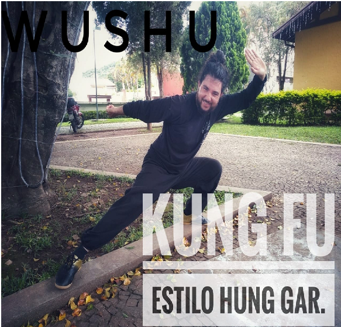

Sou praticante Kung fu
Principal Objetivo
O kung fu tem o objetivo de trabalhar não apenas o corpo, mas também o desenvolvimento pessoal, criando disciplina, persistência e respeito aos limites dos indivíduos; ele estrutura o corpo e a mente fazendo com que as pessoas aprendam a serem derrotadas, e poderem encarar novos obstáculos sem desistir ou desanimar.
Estilo Hungar
O Hung Ga Kuen (洪家拳), ou hong jia quan (洪家拳) (em língua mandarim) é um sistema de kung fu desenvolvido no século XVII.
Wong Fei-hung, que foi mestre de Hung Ga. Este é um dos 5 principais sistemas do sul da China. Sua tradução é boxe da família Hung, e se baseado nos cinco animais básicos Shao Lin: Tigre, Garça, Serpente, Dragão e o Leopardo. Além dos cinco elementos (madeira, metal, água, fogo e terra).
Kung fu
Tradicionalmente conhecido na China por "Wushu", as artes marciais chinesas se popularizaram no Ocidente sob a denominação de "Kung Fu", tendo sido iniciada sua transmissão no Brasil em fins da década de 50, com o trabalho de mestre Wong Sun Kueng (Moy Gin Ying).
Beneficios
Melhora o equilíbrio, a concentração e a elasticidade do corpo. Para quem está precisando melhorar o equilíbrio do corpo, o Kung Fu pode ser um excelente esporte. Isso porque ele trabalha muito bem a movimentação das pernas (com chutes precisos), braços e articulações.
➤